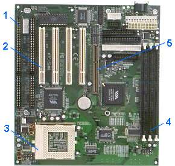
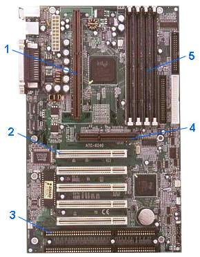
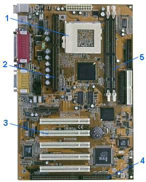

|  | Материнская плата ATC-5200
производства фирмы A-Trend.
Форм-фактор — АТ. Набор микросхем VIA. Поддерживает процессоры Pentium, Pentium MMX, AMD K6-3, K6-2, Cyrix MII, IBM/Cyrix 6x86MX, 6x86L, IDT WinChipC6TM, WinChip2, WinChip 2-3D. Поддерживает до 1 Гбайта оперативной памяти SDRAM, работающей на частоте 100 МГц. Имеет 3 разъема для модулей памяти DIMM, AGP порт, 4 разъема шины PCI, 2 разъема шины ISA. 1 – разъемы шины ISA, 2 – разъемы шины PCI, 3 – разъем процессора Socket 7, 4 – разъемы модулей памяти DIMM, 5 – порт AGP. |
|  | Материнская плата ATC-6240
производства фирмы A-Trend.
Форм фактор – АТХ. Набор микросхем Intel 440BX. Поддерживает процессоры Pentium II (100 и 66 МГц), Pentium III и Celeron. Поддерживает до 1 Гбайта оперативной памяти SDRAM. Имеет 4 разъема для модулей памяти DIMM, AGP порт, 5 разъемов шины PCI, 2 разъема шины ISA. 1 – разъем процессора Slot 1, 2 – разъемы шины PCI, 3 – разъемы шины ISA, 4 – AGP порт, 5 – разъемы модулей памяти DIMM. |
|  | Материнская плата ATC-6430М
производства фирмы A-Trend.
Форм-фактор – АТХ. Набор микросхем Intel 810/810E. Поддерживает процессоры Pentium II, Pentium III, Celeron. Имеет специальный разъем Socket 370 для установки процессора Celeron. Поддерживает до 256 МБайт оперативной памяти SDRAM, работающей на частоте 66, 100 и 133 МГц.Имеет 2 разъема для модулей памяти DIMM, 5 разъемов шины PCI, 1 разъем шины ISA. Имеет встроенный видеодаптер с 3D графическим акселератором и 4 МБайтами видеопамяти. 1 – разъем процессора Socket 370, 2 – разъем процессора Slot 1, 3 – разъемы шины PCI, 4 – разъем шины ISA, 5 – разъемы модулей памяти DIMM. |